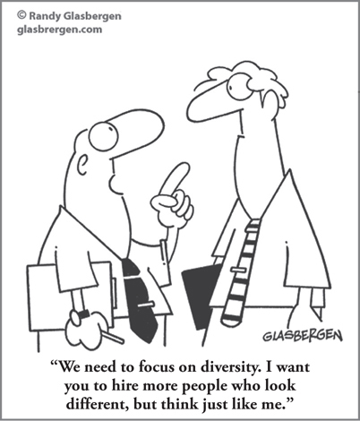

CHAPTER 7
Becoming a Thinking Manager: How to Get Results from Cognitive Differences

CHAPTER HIGHLIGHTS
 Most management frustrations have the same common root: a difference in thinking styles.
Most management frustrations have the same common root: a difference in thinking styles.
 Managing cognitive diversity effectively is a key to handling the complexities of business today.
Managing cognitive diversity effectively is a key to handling the complexities of business today.
 Management styles result from thinking preferences and avoidances that are shaped by life experiences.
Management styles result from thinking preferences and avoidances that are shaped by life experiences.
 Most thinking styles are the result of combinations of preferences; therefore, management styles cover the entire range of thinking-style options.
Most thinking styles are the result of combinations of preferences; therefore, management styles cover the entire range of thinking-style options.
It was a one-day annual divisionwide program with a fairly typical agenda: the senior manager was going to kick things off with a 15-minute introduction, and then my part, covering Whole Brain Thinking, would follow over the next 6½ hours. The day would conclude with a 15-minute wrap-up by the senior manager.
The group of 800 people had assembled—I had seated them on the basis of their thinking preferences (see their composite profile in Figure 7-1)—and the senior manager began his introduction. He spoke mostly of business facts and numbers, discussing how an analysis of the current issues and objectives provided a solid rationale for their attendance at the session. As he welcomed me to the lectern, he emphasized to the audience members that their participation today would help them achieve the critical business outcomes that the company needed.
FIGURE 7-1 Actual HBDI composite profile of 800 employees in a major U.S. corporation.
Over the course of the workshop, I asked a variety of questions, getting responses from each of the four corners of the room representing different thinking perspectives. For example, they answered questions about the kinds of work they loved to do and were stimulated by versus the kinds of work they hated to do and were drained by. Gradually, a pattern began to emerge, one that the participants picked up on as well: the people in the different corners of the room were reacting very differently to the same questions.
After my 6½ hours of Whole Brain Thinking was over, the senior manager returned to the lectern and delivered his concluding remarks. His closing comments couldn’t have been more different from the morning’s introduction. He spoke of the business objectives, but he also talked about how the learnings from the session were going to help them all manage risk and get things done more effectively, how the activities they had worked on together provided a foundation for more cohesive teamwork and awareness of one another’s needs and strengths, and how they now had a better appreciation for the possibilities and new ideas they could try out to reach their goals.
Why the stark contrast from the morning’s strictly business-focused introduction? The senior manager had cancelled our planned lunch, and now I knew why: he told me that observing the session had been a huge “aha! moment” for him. While the A quadrant was most comfortable for him and was the way he preferred to communicate, he realized that by always doing so, he was failing to connect with three-fourths of his employees. He rewrote his concluding remarks over lunch to appeal to the entire group, not just those who thought the way he did. We can all learn from his example.
Think of all the different kinds of management issues an organization faces:
• Employee performance
• Job design
• Job placement
• Management communications
• Team selection
• Organization design
• Workforce planning
• People management
• Project, task, and time management
• Rewards and recognition
Now imagine trying to optimize the management of these issues with a thinking-style preference that’s limited to only one or possibly two quadrants. Most managers of business functions epitomize their occupation, and as we saw in Chapter 6, different occupations have distinct thinking preference norms. But the work required at the managerial level—whether or not it involves managing people—is rarely confined to one or two thinking styles. Particularly as the business environment becomes more complex and unpredictable, it is nearly impossible to be effective without being able to use the full range of thinking styles—not just your own, but the diversity of thinking around you as well.
The essence of management in today’s knowledge worker era is all about becoming a “thinking manager,” someone whose primary focus is on the ability to diagnose and respond to the thinking needs of those being managed, including people, projects, and tasks. This is also the essence of managing yourself. Many of the biggest frustrations that managers face on the job can be traced back to their thinking styles, and specifically, differences in thinking.
Managing Cognitive Diversity
One of the “hot button” issues that organizations have faced for many years is diversity. When investigating the subject further, with sources that have included human resources professionals, operating managers, senior executives, and major publications, I’ve found that age/generation, race, gender, culture, and disabilities are typically the aspects of diversity that they’re referring to.
Diversity is more than that. These sources, and many others in business, are too often overlooking what I consider to be the most significant and the most positive aspect of all—cognitive diversity, the differences in thinking-style preferences.
In Part 1, I explained that the business world is a composite whole brain. That means that organizations are made up of an extraordinarily balanced array of thinking-style preferences. Logic tells us that this level of thinking diversity would occur in companies with more than 10,000 employees; however, our data clearly establishes that this diversity is also true of business organizations with 100 employees and, in many cases, with fewer than 50 employees. It is highly likely that your company’s workforce is made up of a balanced distribution of thinking-style preferences. The question to ponder is whether this diverse workforce is managed in a way that takes advantage of its potential productivity.
Financial balance sheets list assets and liabilities as a way of understanding the current status of the business. These are important measures that need to be taken into account; however, the typical balance sheet is incomplete. The most vital asset of most businesses is not money, bricks and mortar, proprietary technology, or the products manufactured. Today more than ever, it is the human resources, and the thinking they bring, that represent the current and future engine of the business. As many human resources executives can attest, this asset is often undervalued and taken for granted.
Human resources is the vital asset that goes home every night and must come back in the morning if your business is to survive and grow. In today’s environment, this asset is primarily made up of knowledge workers, and this is true even for those businesses that have a large manufacturing component. In these highly competitive and complex times, production workers need to work smart; therefore, the mental demands of the work are greater than ever.
So how do we manage this vital resource? We can start by understanding the value of its diversity at a significantly high level of sophistication. As one operations manager put it, after discovering the mental diversity within his team of direct reports: “I’m amazed at how many previously untapped resources I have.”
I once was asked, “What does the brain have to do with managing?” In the context of cognitive diversity, I can reframe the question as follows: “What does having a workforce with a balanced array of thinking-style preferences have to do with managing?” My answer is: “Everything.” That’s why the characteristics and aspects of thinking preferences discussed so far affect all of the typical management responsibilities. Recognizing, managing, and getting the benefit of the company’s cognitive diversity is essential to managing a successful business today.
For example, in many business situations, creativity is the element that makes the difference between success and failure. It can be the make-or-break competitive advantage, since we know that creativity is mental, and mental diversity is a key to the creative process. Business leaders who understand the significance of diversity in the creative process can take advantage of their organization’s potential by forming teams that are made up of people with different thinking-style preferences. As we will see in Chapter 12, heterogeneous teams are the ultimate weapon in the race toward creativity.
Taking full advantage of the mentally diverse human assets requires a quantum leap in management understanding and competence. It changes the management game. No longer is any single style, whether it be authoritarian or participative, visionary or a master of execution, good enough to optimize business results. Multiple thinking approaches, situationally applied, are required to take full advantage of the richness of human resources. These highly diverse, high-potential, vital assets are already in place. You don’t have to recruit them. You just need to understand them in order to make more effective use of what’s already there.
A Whole Brain Analysis of Management Styles
Just as our thinking preferences influence our competencies and the kinds of work we’re attracted to, they are also embedded in our management style. As we engage in work that is consistent with our mental preferences, we will gradually develop a personal style of working that is visible to others. Just as our mental preferences carry over into our daily work habits, they also carry over into our management styles, because we are viewing the world through the lenses of our personal mental preferences. For example, management tasks such as problem solving, determination of work assignments, interpersonal relationships, communications, and budget preparation, as well as other work elements, will be thought about and carried out on the basis of an individual’s preferences and his or her existing competencies. When this emerging style is affirmed by good results, the managerial behaviors are reinforced and can be difficult to change, especially if the style is in alignment with the surrounding management culture.
Not only are management styles influenced by the work we’re attracted to, but they can also be recognized by the work we really dislike. It is not uncommon for our areas of “dullness” to be more obvious than our areas of smartness. That’s the primary focus of many 360-degree assessments.
For illustration purposes, in the following segment I will describe various managers based on the distinct management styles associated with each of the quadrants. These are extreme examples! I hasten to say that only 5 percent of the people we have surveyed since the introduction of the HBDI assessment have thinking preferences that are focused on a single quadrant. In general, every person, even someone with a strong preference for one quadrant, actually represents a coalition of preferences that includes each of the four quadrants. So as you read through the descriptions, keep in mind that only a small percentage of people would actually exhibit a quadrant-specific style.
The examples demonstrate how easily our mental preferences can dictate our management style when we have no training or intervention that helps us change that natural progression. In the absence of feedback, a person’s style begins to harden and become more and more unchangeable. And if the manager works for a senior manager who has the same style characteristics, those characteristics will tend to become additive and begin to form a management culture. Since seeking out those who are like us is a normal human characteristic, managers often hire in their own image. This natural process tends to reinforce an organization’s management style.
People will perceive managers with distinct style characteristics on the basis of those work elements that they are stimulated by, as well as those elements that they are drained by. But it doesn’t have to be that way. The obvious virtues of each quadrant’s preferences and competencies can be packaged in other combinations, particularly when there are no significant avoidances that make it difficult for the other quadrants to actively contribute.
Our management style, like our personal preferences, can be enriched, broadened, or further focused. Figure 7-2 reviews how each management style may appear by quadrants and modes. The goal is not to be a master of one or all of the styles, but to gain an awareness of all the styles so that you can honor your strengths and cultivate situational smartness in your areas of dullness.
FIGURE 7-2 The Whole Brain Management Styles Matrix provides an overview of how each mode and quadrant may focus.
A-Quadrant Alan
Alan is one of those managers who is completely focused on the task at hand. An engineer, he is extremely comfortable with concrete data such as output records, engineering specs, mathematical formulas, and technical terminology, to name a few. He tends to gravitate toward the information side of the job (what is to be produced, tested, and analyzed) as opposed to the “management of people” side of it, but his employees always know where they stand and what’s expected of them because Alan doesn’t mince words; he’s concise, directive, and all business (see Figure 7-3).
FIGURE 7-3 The A-quadrant management style HBDI pro-forma profile.
He is happiest when he can focus his energy on thinking, processing, and analyzing a problem, as opposed to talking through solutions to problems. As a result, some of the other managers in the organization have made comments like, “Alan is so analytical. He never shows any emotion whatsoever.”
This reaction isn’t surprising. With his strong A-quadrant preferences, Alan is living in a rational, technical world where most things can be explained in logical, analytical terms. When he was promoted to manager, he continued to view the world through these same A-quadrant preferences; his style as a manager carries over his already strong factual orientation. Unless opinions are backed up with factual evidence, he does not consider them important. Alan isn’t interested in small talk with his staff or chatting about what they did over the weekend. The only time he truly enjoys talking with others is in the process of analyzing and defining the facts and in debates on the best equipment, methodology, and combination of people to produce the desired result.
Because Alan has little preference for expressive, interpersonal, emotional, feeling-oriented modes, this absence of preference is a visible factor in his style. In fact, it translates into an active avoidance of those C-quadrant “interpersonal” preferences, which is now becoming the predominant style characteristic that others notice. The result is that some people consider him to be a cold-hearted, nonfeeling sort of person who cares only about his technical equipment and proving his theories.
B-Quadrant Ben
Ben, the company’s quality manager, has a reputation for being a stickler for details. With his traditional and conservative style, he’s far from being the flashiest one in the room, but he is headstrong about striving for safety and quality at all times. Ben is great at structure and at developing policies and procedures, and he expects others to be that way, too. Accountability is important, and that means following the rules and making sure that every point needed to meet deadlines is covered. Recently another manager suggested a change in the quality process on the rationale that it might improve the product in the long run, but Ben was very much resistant to the idea. It would put the company’s timelines at risk, and besides, this is his area. Order and lines of authority need to be clear, and they need to be respected (see Figure 7-4).
FIGURE 7-4 The B-quadrant management style HBDI pro-forma profile.
As a quality manager, Ben oversees work that has to be performed on the basis of documented procedures and strict schedules, with rigorous attention to detail. However, other managers, and sometimes even members of his staff, view his managerial style as being purely time-clock-driven and “nose to the grindstone.” They get frustrated by his rigid adherence to the rules and his unwillingness to explore different options. It’s not that Ben has no interest in human resources or new ideas, but ultimately his style is productivity first and other concerns second. This has created issues for Ben in his collaboration with others and created the perception that he is intransigent, overly tactical, and somewhat stubborn.
C-Quadrant Casey
To employees who want to both grow in their careers and find satisfaction in their lives, Casey, the company’s learning and development manager, is their staunchest advocate. She believes that the business’s human resources are its primary assets, and therefore, she fights for policies, programs, and an organizational climate that support employee development. Her team members appreciate that Casey includes them in major decisions and makes them feel a part of things, and they like the fact that her door is always open when they need someone to talk to, whether the issue is work-related or personal. In fact, people throughout the company come to Casey because she is such a great sounding board, and she is known for being a great facilitator and coach, giving well-considered advice (see Figure 7-5).
FIGURE 7-5 The C-quadrant management style HBDI pro-forma profile.
Casey has been working on a new values program for the organization. She feels strongly that values are a key element in building an engaging corporate culture.
Casey enjoys face-to-face interaction. She likes to pick up on the nuances of body language and express herself fully so that everyone understands where she’s coming from. But she is disappointed that many of the other managers don’t seem to recognize her business value. They say she’s too “soft” and focused on “fluff.” In fact, many of the managers tolerate her as a necessary part of the business, but don’t really view her as an equal partner.
D-Quadrant Danielle
Danielle manages graphic design for the company. A creative and strategic thinker, Danielle is considered by many of her peers to be a resource for new ideas and innovative approaches. Her office is filled with a variety of toys, art books, paper samples, and drawings and doodles, some half completed. Other managers see it as impenetrable clutter, but Danielle says that she wouldn’t be able to work effectively without it. She likes to take risks and keeps trying to push the company out of its tried-and-true, traditional image and branding, but she has trouble getting other managers to see what she sees. She feels they’re too literal and get too hung up on the details and therefore keep missing the bigger picture.
Danielle says that some of the most valuable time she spends with her team is in free-flowing brainstorming sessions. She’ll often have what she calls a “lightbulb” moment, stopping the team in midproject to switch directions and try out a new idea. To other managers, it sometimes seems as if the pursuit of an idea is more important to her than actually finishing something—and sometimes she would agree with them (see Figure 7-6).
FIGURE 7-6 The D-quadrant management style HBDI pro-forma profile.
Structure and time constraints make Danielle uncomfortable. She doesn’t want to feel hemmed in by process or detail. Occasionally, this becomes a problem for her team members, who feel a bit lost without clear goals, but overall, they enjoy the open, fun-loving culture she has created for their group. She’s even started an annual tradition where the team members decorate their offices in a specific theme and dress in elaborate costumes to match.
Clearly, singular-style approaches have their limitations. And it can be useful to understand the management responsibilities that benefit most from each of the four quadrant styles. As you reflect upon your responsibilities, review Figure 7-7 for examples of tasks that “pull” on your thinking in each quadrant.
FIGURE 7-7 Examples of management responsibilities that benefit from different styles.
Combination Styles
The A- and B-Quadrant Management Style: Practical and Realistic
The combination of the A- and B-quadrant managerial styles—the double-dominant left—can be overwhelmingly powerful because the main characteristics of this left-mode style are “hard” rather than “soft.” Managers with this combination of preferences have frequently supplemented their competencies with an MBA degree. This provides an overlay of financial measurement on top of other functional competencies such as law, engineering, or manufacturing and increases the relative “hardness” of the style (see Figure 7-8).
FIGURE 7-8 A combination of A- and B-quadrant management styles in an HBDI pro-forma profile.
The C- and D-Quadrant Management Style: Open-Minded, Intuitive, and Flexible
Just as there is a combination left-mode style that includes the A and B quadrants, there is a combination right-mode style that includes the C and D quadrants. The profile 2-2-1-1 is among the most frequent in business and is seen in many organizations that are more service-oriented. (For more information on the HBDI preference codes, see the HBDI Profile Interpretation Guide in the appendix.) The C/D right-mode style is people-oriented, open-minded, and inclined to be idealistic (see Figure 7-9). Managers of organizational development, for example, would probably fall within the C/D style, which is strong on employee involvement, self-directed work teams, customer service, and a stimulating work climate. Employees who work under this managerial style are often more involved and have more freedom than those who work under an A/B left-mode style.
FIGURE 7-9 A combination of C- and D-quadrant management styles in an HBDI pro-forma profile.
There are two other combination styles that frequently show up: the upper-mode style, made up of the A and D quadrants, and the lower-mode style, made up of the B and C quadrants. Some describe the upper mode as being more in your “head” and the lower mode as working more from your “gut.”
The Upper, A- and D-Quadrant Management Style: Combining Technical and Experimental Thinking
The upper style is characterized by relatively equal preferences for both the A and D quadrants (see Figure 7-10). These two quadrants represent strikingly different modes of thinking, with the A quadrant being strongly logical, analytic, and rational and the D quadrant being equally strongly conceptual, intuitive, and imaginative. This style combines technical and experimental thinking and is therefore the primary style for scientists, inventors, and research and development organizations.
FIGURE 7-10 A combination of A- and D-quadrant management styles in an HBDI pro-forma profile.
Like the left-mode and right-mode styles, the A/D style usually lies between the two quadrants that make it up. However, the upper style can be strongly tilted toward either A or D, and you can easily tell the difference. An A-oriented R&D operation would be scientific, serious, and strongly business-oriented. In comparison, an upper style with a strong D-quadrant orientation would be highly experimental and motivated, but loose and open.
People who exhibit the upper style often get “lost in their work.” Imagine a physicist working on a complex problem: it’s heady stuff, with frequent insights and technical, scientific breakthroughs. People with these preferences get a lot of internal rewards from the work they do without always having to depend on rewards coming from the managerial bureaucracy. Often this style is recognizable by what it lacks—a groundedness in the security-minded and people-oriented qualities of the lower quadrants.
The Lower, B- and C-Quadrant Management Style: Combining Traditional Stability with Caring Responsiveness
The double-dominant B- and C-quadrant style is quite different. This is a style that combines orderliness, tradition, ritual, and productivity with a strong people orientation, sensitivity to feelings, a preference for team participation, and involvement (see Figure 7-12). It is strongly service-oriented and considers employees, customers, and the community to be high-priority stakeholders. A supervisory nurse embodies this style of management. Social work departments, elementary schools, and department stores like Nordstrom’s, with their strong customer/community orientation, are also prime examples. This style tends to favor the status quo and doing what’s right for the company and the individual. It has a strong production orientation, but not at the expense of the people involved. A strong loyalty often accompanies the lower style. As with the upper style, whether the emphasis is on one quadrant or the other depends upon the individuals and the prevailing management culture.
FIGURE 7-12 A combination of B- and C-quadrant management styles in an HBDI pro-forma profile.
The Multi-Dominant Management Style: Able to Respond to a Diverse Set of Business Issues
A multi-dominant management style is one that can readily access all four quadrants and apply the features of the different styles in situationally appropriate ways. To be able to make use of the multi-dominant style, an individual must be able to access the four different styles on a relatively level playing field. Think of a four-quadrant, four-mode pool of style options that the multi-dominant person could draw from as situationally required: eight discrete styles as just described (see Figure 7-13). While the multi-dominant style could be available to any manager in any function, those managers who have work requirements that involve all four quadrants are the ones who are most likely to apply it. The CEO has traditionally been the individual who most benefited from and needed to rely on a multi-dominant approach, but increasingly managers at all levels and across functions are requiring a more flexible and agile style to manage effectively in a complex, constantly changing business environment.
FIGURE 7-13 The multi-dominant management styles in an HBDI pro-forma profile.
Being situational is the key requirement for the full application of the multi-dominant style. By this I mean having the ability to apply the quadrant-specific style characteristics. For example, a manager who deals with a financial issue with his or her team can greatly enhance the outcome by not only drawing on an analytical style, but also incorporating organized, interpersonal, long-range, strategic, and expressive thinking styles. Contrast this with a manager who is limited to just an analytical style.
Another example would be a human resource development manager who is trying to effect a culture change by implementing an effective cash management program but is limiting his implementation style to the confines of a participatory humanistic approach. In this example, the absence of the structured, organized B-quadrant style, the quantitative, logical A-quadrant style, and the integrating-synthesizing D-quadrant style seriously minimizes the likelihood of success.
Being an effective practitioner of the multi-dominant style requires having the opportunity to apply it frequently enough for an appropriate array of competencies to be developed. Managerial and leadership positions that have a high frequency of multi-dominant opportunity are becoming more commonplace across functions; some examples include plant manager, general/division manager, project manager, multifunction team leader, executive assistant, and, of course, chief executive officer. The daily, weekly, and monthly inbox of people in these positions can be so wide-ranging that flexibility of style options is a real advantage, if not a necessity. Since only 3 percent of the population has primary preferences for all four quadrants, being situationally whole-brained is the viable solution. This means that those styles that are not our most preferred need to be available for timely application in situations that could benefit from such a style.
There is something to be said for consistency, but managing in only one style can be limiting if the situation requires shifting to a style that is more effective. Consider an individual whose work requires effective management behavior in a budgetary situation with finance, a design review session with engineering, deciding on appropriation requests from manufacturing, reaching a decision on the architectural plan for the new headquarters building, responding to the recommendations of the art selection committee for the main lobby, and conducting the annual employee utilization review with the human resources representatives from each of the major functions. These multiple events are scheduled to take place over a three-day period. Now consider for a moment the range of management styles that could be applied to maximize the success of each separate event.
Now think about a single situation that could benefit from the ability to flex your style: coaching or mentoring. When you understand and adapt to the styles of the person you are coaching or mentoring, you’ll be able to connect with him or her more quickly and work together in a way that ensures both of you are really heard, understood, and focusing your time and energy where it matters.
The advantage of style flexibility is clear, whether the position is that of a project manager, the head of a multifunctional division, or chief executive officer. Being situational is similar to “rising to the occasion” as the situation demands, even though the experience base is not equally distributed, and even though your preference for managing your way through each unique event is not equally high. Being able to switch back and forth among styles eventually allows for the acquisition of the competencies to meet each different need.
Throughout this book, there are quadrant walk-around models that are designed to achieve Whole Brain results. By forcing a walk-around of the four quadrants, these models help diagnose whether the attributes of each quadrant have been factored into whatever domain the model is addressing. Applying this walk-around concept to management styles can help us determine which style is most appropriate, whether it be in a staff meeting, in dealing with a customer complaint, in running an annual meeting, or in dealing with the media. Figure 7-14 provides tips for shifting your style.
In general, the most flexible situational style is the one that will produce the best results from any organization, with the caveat that, whatever the style, the needed competencies required by the business must be available to meet daily business needs. Style alone cannot produce bottom-line results.
 Cognitive diversity is a valuable but often overlooked and underleveraged resource in business.
Cognitive diversity is a valuable but often overlooked and underleveraged resource in business.
 Since the world of management is made up of all combinations of preferences and avoidances, all possible management styles are present in the business world.
Since the world of management is made up of all combinations of preferences and avoidances, all possible management styles are present in the business world.
 Style flexibility contributes to managerial effectiveness.
Style flexibility contributes to managerial effectiveness.